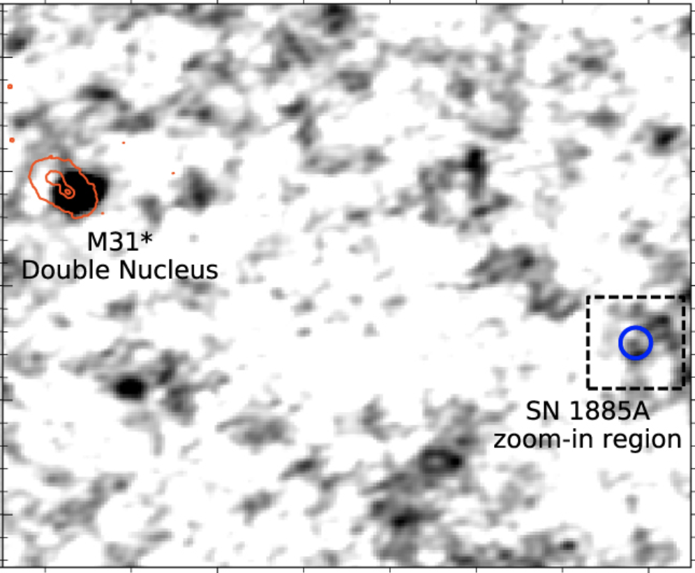
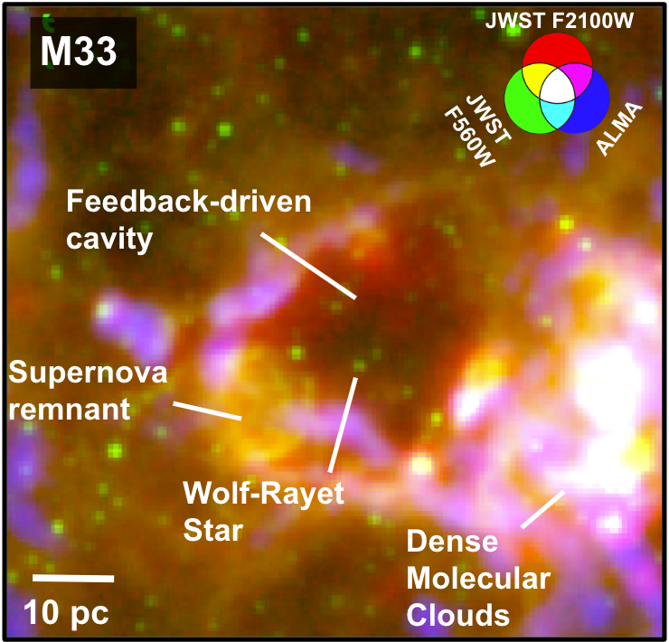

Supernova Progenitors

Deep VLA observations of SN 1885A in M31, an old thermonuclear supernova, from Sarbadhicary et al (2019)
Relevant Publications :
Sarbadhicary et al (2019),
Pellegrino et al (2020),
Cendes et al (2020),
Sand et al (2021),
Harris et al (2023),
Hosseinzadeh et al (2023)
Supernova Remnants
Supernova remnants are the structures formed by interaction of shocks from a past supernova, with the interstellar medium. They are very unique tools for studying how stars heat and disperse gas in a galaxy, and often has hidden clues about the progenitor. A lot of my work in this area involved developing models of how supernova remnants evolve, so we can better use them to study progenitors and feedback. I have developed a model of supernova remnant emitting radio emission, using particle acceleration and synchrotron emission models, supplemented by maps of the interstellar medium and stars in the Local Group galaxies. This model (available online) can be used to understand the statistical properties of supernova remnants and cosmic rays. Recently I also applied this work to understand the recently-discovered phenomena of mysterious Odd Radio Circles. I am currently in the process of assembling the largest and most statistically complete catalogs of supernova remnants in the Local Group galaxies and the PHANGS survey of galaxies within 23 Mpc.
Relevant Publications :
Sarbadhicary et al (2017),
Sarbadhicary et al (2023b),
Supernova Feedback

A complex region of the interstellar medium in M33, showing overlapping supernova remnant, a feedback-driven cavity and a Wolf-Rayet star, surrounding by dense molecular clouds. Data obtained from ALMA (PI: E Koch) and JWST (PI: E Rosolowsky). Figure adapted from Sarbadhicary et al (2023) Relevant Publications :
Sarbadhicary et al (2022),
Sarbadhicary et al (2023a),
Mayker Chen et al (2023),
Egorov et al (2023)
Stellar Evolution from Stellar Population Surveys
I specialize in a novel method of studying stellar evolution models from photometric maps of stars in nearby galaxies, called the delay-time distribution. The quantity is basically the rate at which objects (e.g. supernovae) form per unit mass of stars, versus time-elapsed since star-formation. One can measure this quantity for any category of stars or stellar phenomena, using a catalog of those objects, and star-formation histories derived from photometric maps of galaxies, and compare with similar predictions from population synthesis models. This can be a very useful technique for stellar evolution research in the upcoming Rubin/Roman era.
Relevant Publications :
Sarbadhicary et al (2021)
Dong et al (2022)
2016 White House Frontiers Conference: Astronomy Night
 I participated in the public Astronomy Night event at Allegheny Observatory, which was a part of former-President Barack Obama's White House Frontiers Conference in Pittsburgh. The event celebrated the spirit of innovation and discovery in science, and was open to the general public. Attendees included kids from local Pittsburgh schools, amateur astronomers, and NASA officials. I was mainly in charge of an 8-inch telescope mounted on the observatory lawn, pointed at the Ring nebula. I also prepared a poster on black holes and gravitational waves, and occasionally answered questions on various astrophysical topics in the "Meet the Astronomers" tent.
I participated in the public Astronomy Night event at Allegheny Observatory, which was a part of former-President Barack Obama's White House Frontiers Conference in Pittsburgh. The event celebrated the spirit of innovation and discovery in science, and was open to the general public. Attendees included kids from local Pittsburgh schools, amateur astronomers, and NASA officials. I was mainly in charge of an 8-inch telescope mounted on the observatory lawn, pointed at the Ring nebula. I also prepared a poster on black holes and gravitational waves, and occasionally answered questions on various astrophysical topics in the "Meet the Astronomers" tent.
Investing Now
Investing Now is an annual high-school outreach program at the University of Pittsburgh mainly for students from groups that were historically under-represented in science, technology, engineering and mathematics. In 2017, I was part of a team of grad students who demonstrated basic physics concepts through a series of demonstrations. I was in charge of experiments on electrostatics phenomena like attraction/repulsion, grounding, static discharge, Van-de-graff generator and the Faraday cage effect.
Astrosnacks
I started a weekly seminar with Sukhdeep Singh (Carnegie Mellon University) called Astrosnacks in 2014 where students from University of Pittsburgh and Carnegie Mellon University give research talks to a student-only audience. The goal is provide an informal setting where students can improve their scientific presentation skills through practice and feedback from their peers. Astrosnacks also features guest student speakers from other universities, review talks and various career-related lectures.